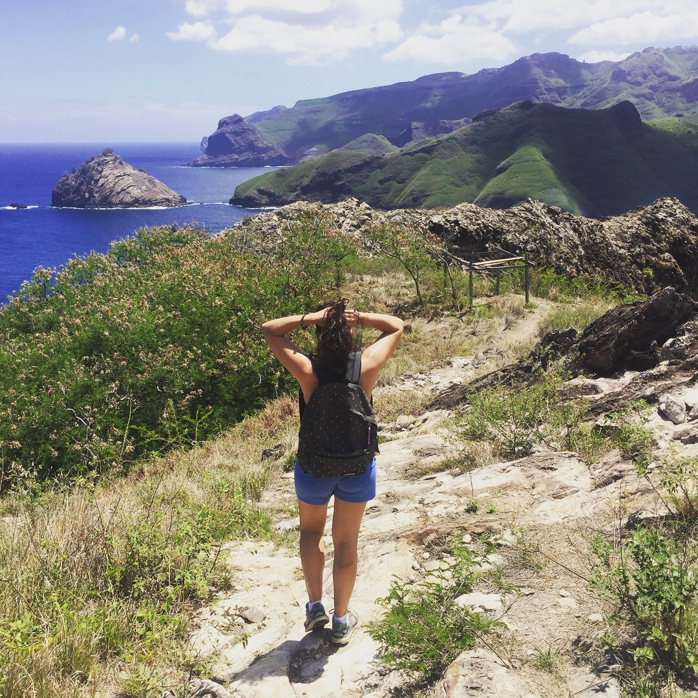

Un camino de vuelta a casa

Mi camino nunca fue un camino recto.
Me perdí tantas veces que no tuve más remedio que aprender a encontrarme.
No siempre fui consciente de ello.
Durante mucho tiempo, pensaba que la respuesta la hallaría en el siguiente destino, en el siguiente proyecto, en el siguiente reto...
Y seguí caminando.
La vida fue llevándome por lugares que jamás habría imaginado. Personas que cambiaron mi forma de mirar el mundo. Cocinas donde entendí que alimentar también puede ser una forma de cuidar.
Cada experiencia me regaló algo.
Pero había una pregunta que seguía esperando...
¿Qué ocurre cuando el viaje más importante no es hacia fuera, sino hacia dentro?
Volver al cuerpo.
Volver a la calma.
Volver a la presencia.
Volver a la luz.
Cosas sobre mí que quizás no esperarías
Soy chef.
Y trabajo en un catering donde hay días en los que todo sucede a la vez. Me encanta la intensidad de ese mundo, pero también he aprendido que, para sostenerla, necesito cuidar mi propio equilibrio.
Convivo con ambos mundos sin sentir que tengo que elegir entre ellos.
⸻
Con los años he ido encontrando herramientas que me ayudan a volver a mí.
El Reiki fue una de las primeras.
Después llegaron los Registros Akáshicos, las Barras de Access, la aromaterapia…
Hoy los aceites esenciales forman parte de mi día a día. Más que utilizarlos, siento que he aprendido a escucharlos.
⸻
También tengo un lado muy terrenal.
Me gusta cocinar para las personas que quiero.
Llenar la casa de flores.
Cuidar las plantas.
Encender una vela.
Crear pequeños altares que me recuerden la belleza de lo cotidiano.
⸻
Soy profundamente emocional.
Hay días en los que una canción consigue desarmarme por completo.
Puedo pasar horas perdida entre las páginas de un libro.
Y, aunque nunca he destacado por ello, pocas cosas me hacen sentir tan viva como bailar o cantar sin preocuparme de hacerlo bien.
⸻
No creo en las personas que ya han llegado.
Creo en las personas que siguen caminando.
Yo sigo aprendiendo.
Sigo cuestionándome.
Sigo cambiando de opinión.
Y espero no dejar nunca de hacerlo.